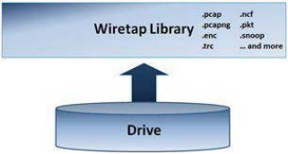
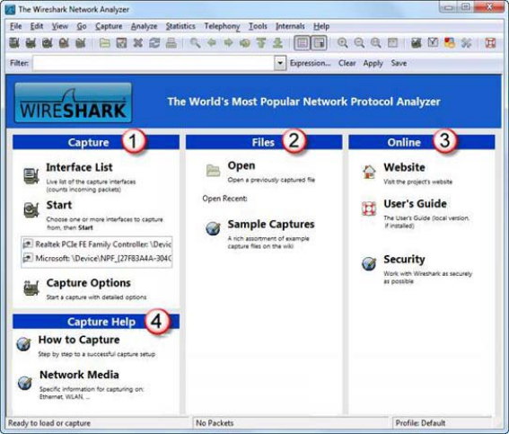
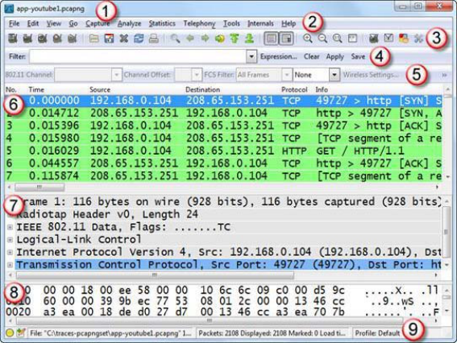
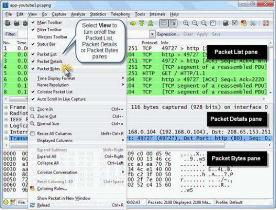

Wireshark Creation and Maintenance
Wireshark is the world's most popular network analyzer. Available free as an open-source tool, it runs on a variety of platforms and offers the ideal "first responder" tool for IT professionals.
In 1997, commercial network analyzers cost $5,000–$20,000. Gerald Combs, a technologist at a small Internet service provider, decided to create his own. Prior to writing Ethereal, Combs was using a Sniffer portable at the University of Missouri. He originally released his network analyzer as Ethereal (version 0.2.0) on July 14, 1998.
When Gerald began working with CACE Technologies in June 2006, trademark ownership issues forced the move to the new name Wireshark. CACE Technologies was purchased by Riverbed Technology in 2010. Wireshark is maintained by an active community of ~700 credited developers worldwide, with 10–20 active at any given time.
Obtain & License
Download from www.wireshark.org/download.html. Wireshark is released under the GNU GPL. Available for Windows, Apple Mac OS X, Debian GNU/Linux, FreeBSD, Gentoo Linux, HP-UX, Mandriva, NetBSD, Red Hat Enterprise Linux, Ubuntu, and more.
Wireshark contains 2,272,715 lines of code — estimated development cost of $90,367,829. Bug tracking at bugs.wireshark.org/bugzilla. Use Help | About Wireshark | Authors to see the current developer list.
Capture Packets on Wired or Wireless Networks

When Wireshark is connected to a wired or wireless network, traffic is processed by either the WinPcap, AirPcap or libpcap link-layer interface.
Libpcap
The libpcap library is the industry standard link-layer interface for capturing traffic on *NIX hosts. Information regarding patches can be found at www.tcpdump.org.
WinPcap
WinPcap is the Windows port of the libpcap link-layer interface. WinPcap consists of a driver that provides low-level network access and the Windows version of the libpcap API. Visit www.winpcap.org for more information.
AirPcap
AirPcap is a link-layer interface and network adapter for capturing 802.11 traffic on Windows. AirPcap adapters operate in passive mode to capture WLAN data, management, and control frames. More at www.riverbed.com/us/products/cascade/airpcap.php.
Open Various Trace File Types

WinPcap, AirPcap and libpcap interfaces are not used when opening trace files. Opened trace files are processed through the Wireshark Wiretap Library.
The Wiretap Library enables Wireshark to read a variety of trace file formats including:
- Wireshark/tcpdump-libcap
- Microsoft NetMon
- Endace ERF capture
- Network General Sniffer
- TamoSoft CommView
- NI Observer, Shomiti/Finisar Surveyor
- Sun snoop, WildPackets *Peek, and more
To view the entire list of supported formats: File | Open → expand the Files of Type drop-down list.
To learn about developing your own dissectors for Wireshark, visit www.wireshark.org/docs/wsdg_html_chunked/ or attend the Sharkfest Conference (sharkfest.wireshark.org).
Understand How Wireshark Processes Packets
Trace files processed by libpcap/WinPcap/AirPcap or opened via the Wiretap Library are processed through the core engine.
Core Engine
The core engine is described as the "glue code that holds the other blocks together." It coordinates dissectors, plugins, display filters, and the graphical toolkit.
Dissectors and Plugins
Dissectors (also called decodes) decode packets to display field contents and interpreted values. When a packet arrives, Wireshark detects the frame type first, then chains through dissectors:
There are over 105,000 possible display filters — one for virtually every protocol field Wireshark can dissect. Disabling UDP also disables DHCP and DNS because those applications depend on UDP being decoded first.
GIMP Toolkit (GTK+)
GTK+ is the graphical toolkit used to create the Wireshark GUI, offering cross-platform compatibility across Windows, macOS, and Linux.
Use the Start Page & Identify the Nine GUI Elements

The Start Page was added in Wireshark 1.2.0 and has four areas:
- Capture Area — Interface List, Start capture, Capture Options
- Files Area — Open, Open Recent list, Sample Captures link
- Online Area — Website, User's Guide, Security page
- Capture Help Area — How to Capture, Network Media

When you open a trace file or begin capture, you are in the main Wireshark window with nine distinct sections:
- Title
- Menu (text — cannot be hidden)
- Main Toolbar (icons)
- Filter Toolbar
- Wireless Toolbar
- Packet List Pane
- Packet Details Pane
- Packet Bytes Pane
- Status Bar
The Status Bar contains five elements: the Expert Info button (color-coded: Red=Errors, Yellow=Warnings, Cyan=Notes, Blue=Chats, Green=Comments only, Grey=None), the Annotation button, the File Information column (path, size, duration), the Packet Information column (total, displayed, marked, ignored), and the Profile column.

Use View menu to show/hide the Packet List, Packet Details, and Packet Bytes panes. Most common: hide Packet Bytes to give more space to Packet List and Details.
Enable Edit | Preferences | User Interface → Welcome screen and title bar shows version to always know your Wireshark version. Add a custom window title under Edit | Preferences | Layout → Custom window title.
Navigate Wireshark's Main Menu
The Main Menu has eleven sections (cannot be hidden). Key items worth knowing:
File Menu
- File | File Set: work with a series of split trace files linked by Wireshark
- File | Export: export selected packets, dissections, or objects (HTTP, SMB, DICOM, SSL)
- File | Merge: combine trace files — use Mergecap for chronological ordering
Edit Menu
- Mark Packets (Ctrl+M): temporary black/white highlight — cleared when file is reopened
- Time Reference (Ctrl+T): measure elapsed time from a specific packet
- Time Shift (since v1.8): alter timestamps in the trace
- Edit | Preferences: User Interface, Capture, Name Resolution, Filter Expressions, Statistics, Protocols
View Menu
- View | Time Display Format: most important for troubleshooting — use "Seconds Since Previous Displayed Packet" to identify large gaps
- View | Coloring Rules: persistent per-profile; "Bad TCP" rule excludes Window Updates since v1.8
Analyze Menu
- Decode As: force a specific dissector on traffic using non-standard ports (temporary unless saved)
- User Specified Decodes: save Decode As settings persistently
- Follow TCP/UDP/SSL Stream: reassemble streams for faster interpretation
- Expert Info: identifies unusual traffic with categorization and colorization
Statistics Menu
- Protocol Hierarchy: detect protocol anomalies by packet/byte percentage
- IO Graphs: most powerful feature — compare traffic patterns with display filters
- Conversations / Endpoints: identify most active hosts and conversations
![Figure 38: An IO Graph depicts all traffic and the Duplicate ACKs [http-download-bad.pcapng]](figures/fig38-io-graph-duplicate-acks.png)
The Internals menu lists 1,100+ supported protocols. Tools | Firewall ACL Rules builds Cisco IOS, IPFirewall, Netfilter, or Windows Firewall rules directly from a selected packet source IP. Tools | Lua enables scripting to extend Wireshark functionality.
Use the Main Toolbar for Efficiency
The Main Toolbar is separated into seven sections:
- Capture: List Interfaces, Capture Options, Start Capture, Stop Capture, Restart Capture
- Trace and Print: Open File, Save File, Close File, Reload File (clears ignored/time references), Print
- Navigation: Find, Go Back, Go Forward, Jump To, First Packet, Last Packet, Go to Corresponding Packet
- Color and Scroll: Packet Coloring (toggle), Auto Scroll (toggle — disable when dropping packets)
- Viewer: Zoom In, Zoom Out, Zoom 100%, Resize All Columns
- Filter, Color and Configuration: Capture Filter Editor, Display Filter Editor, Coloring Rules Editor, Global Preferences
- Help: Help Window
Filter Toolbar
Contains the Display Filter button, filter area with auto-complete (105,000+ possible filters), Expression button, Clear, Apply, and Save. Filter Expressions (since v1.8) save favorite filters as buttons.
Wireless Toolbar
For 802.11 analysis. The 802.11 Channel, Channel Offset, FCS Filter, Wireless Settings, and Decryption Keys fields require an AirPcap adapter. The toolbar is hidden by default — View | Wireless Toolbar to show it.
Help | About Wireshark
Use the Wireshark tab to see your version and capabilities (SMI, GeoIP, etc.). The Folders tab shows where your Personal Configuration folder, profile files, and GeoIP database live — essential for locating configuration files.
Work Faster Using RightClick Functionality
Rightclick options are available in all three main panes, with different options in each.
Packet List Pane (right-click on a packet)
- Apply as Filter, Prepare a Filter, Conversation Filter
- Follow TCP/UDP/SSL Stream
- Colorize Conversation
- Mark Packet (toggle), Ignore Packet (toggle)
- Set Time Reference, Time Shift
- Edit or Add Packet Comment (requires pcap-ng format; saved in pkt_comment field)
- Copy: Summary Text, Summary CSV, As Filter, Bytes, Printable Text Only, Hex Stream, Binary Stream
Packet Details Pane (right-click on a field)
- Expand All, Collapse All
- Apply as Column: add the selected field as a persistent Packet List column
- Apply as Filter, Prepare a Filter
- Copy: Description, Fieldname, Value, As Filter, Bytes, Hex Stream, Binary Stream
- Wiki Protocol Page: opens the Wireshark Wiki page for the protocol
- Filter Field Reference: opens the display filter reference list in your browser
- Resolve Name: temporary single-IP DNS PTR lookup (lost on file reload)
- Protocol Preferences: quick access to per-protocol settings
Column Heading Right-Click
Right-click any column heading to align, rename, hide/show, or remove it. Right-click and select Edit Column Details to change the field, occurrence, and display type.
Know Your Key Resources
Wireshark Mailing Lists
- Wireshark-announce: release announcements (low volume)
- Wireshark-users: community support (high volume) — prefer ask.wireshark.org
- Wireshark-dev: developer discussion
- Wireshark-commits: SVN repository commits
- Wiresharkbugs: bug tracker comments (for masochists)
ask.wireshark.org
Launched end of 2010 by Gerald Combs. A Q&A repository for Wireshark support. Preferred over the Wireshark-users mailing list for most questions.
Key Websites
www.wireshark.org— main sitewiki.wireshark.org— Wiki documentationbugs.wireshark.org/bugzilla— bug trackerwww.wiresharktraining.com— training and WCNA certificationwww.winpcap.org/www.tcpdump.org— WinPcap / libpcapwww.iana.org— Internet Assigned Numbers Authoritywww.ietf.org— Internet Engineering Task Force (RFCs)
Trace File Sources
www.wiresharkbook.com— book companion trace files (pcap-ng format with packet comments)www.pcapr.net— 6,500+ users, 60M+ packets, largest public pcap repositoryopenpacket.org— maintained by JJ Cummings, focused on security community

I was troubleshooting an application problem for a client — a simple "Database Version 6 or Higher Required" message. The database files were already in version 6 format, and the error only appeared about 1/10 of the time, sometimes on a different database file.
After quadruple-checking all the usual suspects and enabling the database vendor's trace feature, we captured a series of events with the error. Upon digging through an 80MB trace file, we located the database request where the version number was requested. The application had provided a 0 value for one of the parameters instead of -1 (which tells the database to return the current file version). With 0 in there, no file version was returned, so the program complained.
We complained to the vendor, who dug through their code and could find NO instances of ever passing a 0. Back to the trace file — we confirmed that 19/20 times the parameter was -1, but periodically it was 0.
We captured traffic from the same startup process simultaneously: one trace working, one not. We watched the -1 leave the workstation in both the client trace and the server trace, but the database vendor's trace file showed 0. Indisputable proof! The vendor found a case where parameters could be overwritten with 0 in the communications module. A new communications module arrived the following week.
What we learned:
- You may need the application developer, backend developer, AND a networking professional for some issues
- You may need multiple network traces (at the client AND at the server)
- Just because a vendor provides a trace log does not mean you can rely on it
Introduction to Wireshark
From its humble beginnings as Ethereal, Wireshark has matured to a feature rich tool for analyzing wired and wireless network traffic. As long as you stay within the laws and corporate policies that regulate use of Wireshark, you can troubleshoot and secure your network more efficiently with an inside look at network communications.
All versions of Wireshark use packet capture drivers to capture traffic on wired and wireless networks and the Wiretap Library to open various types of trace files. Wireshark supports a common interface across multiple platforms with menu-based, icon-based or rightclick functionality for trace file manipulation and interpretation.